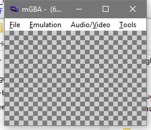

Making A Memory Game
For this example to show off our new skills we'll make a "memory" game. The idea is that there's some face down cards and you pick one, it flips, you pick a second, if they match they both go away, if they don't match they both turn back face down. The player keeps going until all the cards are gone, then we'll deal the cards again.
There are many steps to do to get such a simple seeming game going. In fact I stumbled a bit myself when trying to get things set up and going despite having written and explained all the parts so far. Accordingly, we'll take each part very slowly, and review things as we build up our game.
We'll start back with a nearly blank file, calling it memory_game.rs:
#![feature(start)] #![no_std] #[panic_handler] fn panic(_info: &core::panic::PanicInfo) -> ! { loop {} } #[start] fn main(_argc: isize, _argv: *const *const u8) -> isize { loop { // TODO the whole thing } }
Displaying A Background
First let's try to get a background going. We'll display a simple checker pattern just so that we know that we did something.
Remember, backgrounds have the following essential components:
- Background Palette
- Background Tiles
- Screenblock
- IO Registers
Background Palette
To write to the background palette memory we'll want to name a VolatilePtr for
it. We'll probably also want to be able to cast between different types either
right away or later in this program, so we'll add a method for that.
# #![allow(unused_variables)] #fn main() { #[derive(Debug, Clone, Copy, PartialEq, Eq)] #[repr(transparent)] pub struct VolatilePtr<T>(pub *mut T); impl<T> VolatilePtr<T> { pub unsafe fn read(&self) -> T { core::ptr::read_volatile(self.0) } pub unsafe fn write(&self, data: T) { core::ptr::write_volatile(self.0, data); } pub fn offset(self, count: isize) -> Self { VolatilePtr(self.0.wrapping_offset(count)) } pub fn cast<Z>(self) -> VolatilePtr<Z> { VolatilePtr(self.0 as *mut Z) } } #}
Now we give ourselves an easy way to write a color into a palbank slot.
# #![allow(unused_variables)] #fn main() { pub const BACKGROUND_PALETTE: VolatilePtr<u16> = VolatilePtr(0x500_0000 as *mut u16); pub fn set_bg_palette_4bpp(palbank: usize, slot: usize, color: u16) { assert!(palbank < 16); assert!(slot > 0 && slot < 16); unsafe { BACKGROUND_PALETTE .cast::<[u16; 16]>() .offset(palbank as isize) .cast::<u16>() .offset(slot as isize) .write(color); } } #}
And of course we need to bring back in our ability to build color values, as well as a few named colors to start us off:
# #![allow(unused_variables)] #fn main() { pub const fn rgb16(red: u16, green: u16, blue: u16) -> u16 { blue << 10 | green << 5 | red } pub const WHITE: u16 = rgb16(31, 31, 31); pub const LIGHT_GRAY: u16 = rgb16(25, 25, 25); pub const DARK_GRAY: u16 = rgb16(15, 15, 15); #}
Which finally allows us to set our palette colors in main:
fn main(_argc: isize, _argv: *const *const u8) -> isize { set_bg_palette_4bpp(0, 1, WHITE); set_bg_palette_4bpp(0, 2, LIGHT_GRAY); set_bg_palette_4bpp(0, 3, DARK_GRAY);
Background Tiles
So we'll want some light gray tiles and some dark gray tiles. We could use a single tile and then swap it between palbanks to do the color selection, but for now we'll just use two different tiles, since we've got tons of tile space to spare.
# #![allow(unused_variables)] #fn main() { #[derive(Debug, Clone, Copy, Default)] #[repr(transparent)] pub struct Tile4bpp { pub data: [u32; 8], } pub const ALL_TWOS: Tile4bpp = Tile4bpp { data: [ 0x22222222, 0x22222222, 0x22222222, 0x22222222, 0x22222222, 0x22222222, 0x22222222, 0x22222222, ], }; pub const ALL_THREES: Tile4bpp = Tile4bpp { data: [ 0x33333333, 0x33333333, 0x33333333, 0x33333333, 0x33333333, 0x33333333, 0x33333333, 0x33333333, ], }; #}
And then we have to have a way to put the tiles into video memory:
# #![allow(unused_variables)] #fn main() { #[derive(Clone, Copy)] #[repr(transparent)] pub struct Charblock4bpp { pub data: [Tile4bpp; 512], } pub const VRAM: VolatilePtr<Charblock4bpp> = VolatilePtr(0x0600_0000 as *mut Charblock4bpp); pub fn set_bg_tile_4bpp(charblock: usize, index: usize, tile: Tile4bpp) { assert!(charblock < 4); assert!(index < 512); unsafe { VRAM.offset(charblock as isize).cast::<Tile4bpp>().offset(index as isize).write(tile) } } #}
And finally, we can call that within main:
fn main(_argc: isize, _argv: *const *const u8) -> isize { // bg palette set_bg_palette_4bpp(0, 1, WHITE); set_bg_palette_4bpp(0, 2, LIGHT_GRAY); set_bg_palette_4bpp(0, 3, DARK_GRAY); // bg tiles set_bg_tile_4bpp(0, 0, ALL_TWOS); set_bg_tile_4bpp(0, 1, ALL_THREES);
Setup A Screenblock
Screenblocks are a little weird because they take the same space as the charblocks (8 screenblocks per charblock). The GBA will let you mix and match and it's up to you to keep it all straight. We're using tiles at the base of charblock 0, so we'll place our screenblock at the base of charblock 1.
First, we have to be able to make one single screenblock entry at a time:
# #![allow(unused_variables)] #fn main() { #[derive(Debug, Clone, Copy, Default)] #[repr(transparent)] pub struct RegularScreenblockEntry(u16); impl RegularScreenblockEntry { pub const SCREENBLOCK_ENTRY_TILE_ID_MASK: u16 = 0b11_1111_1111; pub fn from_tile_id(id: u16) -> Self { RegularScreenblockEntry(id & Self::SCREENBLOCK_ENTRY_TILE_ID_MASK) } } #}
And then with 32x32 of these things we'll have a whole screenblock. Now, we probably won't actually make values of the screenblock type itself, but we at least need it to have the type declared with the correct size so that we can move our pointers around by the right amount.
# #![allow(unused_variables)] #fn main() { #[derive(Clone, Copy)] #[repr(transparent)] pub struct RegularScreenblock { pub data: [RegularScreenblockEntry; 32 * 32], } #}
Alright, so, as I said those things are kinda big, we don't really want to be building them up on the stack if we can avoid it, so we'll write one straight into memory at the correct location.
# #![allow(unused_variables)] #fn main() { pub fn checker_screenblock(slot: usize, a_entry: RegularScreenblockEntry, b_entry: RegularScreenblockEntry) { let mut p = VRAM.cast::<RegularScreenblock>().offset(slot as isize).cast::<RegularScreenblockEntry>(); let mut checker = true; for _row in 0..32 { for _col in 0..32 { unsafe { p.write(if checker { a_entry } else { b_entry }) }; p = p.offset(1); checker = !checker; } checker = !checker; } } #}
And then we add this into main
# #![allow(unused_variables)] #fn main() { // screenblock let light_entry = RegularScreenblockEntry::from_tile_id(0); let dark_entry = RegularScreenblockEntry::from_tile_id(1); checker_screenblock(8, light_entry, dark_entry); #}
Background IO Registers
Our most important step is of course the IO register step. There's four different background layers, but each of them has the same format for their control register. For the moment, all that we care about is being able to set the "screen base block" value.
# #![allow(unused_variables)] #fn main() { #[derive(Clone, Copy, Default, PartialEq, Eq)] #[repr(transparent)] pub struct BackgroundControlSetting(u16); impl BackgroundControlSetting { pub fn from_base_block(sbb: u16) -> Self { BackgroundControlSetting(sbb << 8) } } pub const BG0CNT: VolatilePtr<BackgroundControlSetting> = VolatilePtr(0x400_0008 as *mut BackgroundControlSetting); #}
And... that's all it takes for us to be able to add a line into main
# #![allow(unused_variables)] #fn main() { // bg0 control unsafe { BG0CNT.write(BackgroundControlSetting::from_base_block(8)) }; #}
Set The Display Control Register
We're finally ready to set the display control register and get things going.
We've slightly glossed over it so far, but when the GBA is first booted most everything within the address space will be all zeroed. However, the display control register has the "Force VBlank" bit enabled by the BIOS, giving you a moment to put the memory in place that you'll need for the first frame.
So, now that have got all of our memory set, we'll overwrite the initial display control register value with what we'll call "just enable bg0".
# #![allow(unused_variables)] #fn main() { #[derive(Clone, Copy, Default, PartialEq, Eq)] #[repr(transparent)] pub struct DisplayControlSetting(u16); impl DisplayControlSetting { pub const JUST_ENABLE_BG0: DisplayControlSetting = DisplayControlSetting(1 << 8); } pub const DISPCNT: VolatilePtr<DisplayControlSetting> = VolatilePtr(0x0400_0000 as *mut DisplayControlSetting); #}
And so finally we have a complete main
#[start] fn main(_argc: isize, _argv: *const *const u8) -> isize { // bg palette set_bg_palette_4bpp(0, 1, WHITE); set_bg_palette_4bpp(0, 2, LIGHT_GRAY); set_bg_palette_4bpp(0, 3, DARK_GRAY); // bg tiles set_bg_tile_4bpp(0, 0, ALL_TWOS); set_bg_tile_4bpp(0, 1, ALL_THREES); // screenblock let light_entry = RegularScreenblockEntry::from_tile_id(0); let dark_entry = RegularScreenblockEntry::from_tile_id(1); checker_screenblock(8, light_entry, dark_entry); // bg0 control unsafe { BG0CNT.write(BackgroundControlSetting::from_base_block(8)) }; // Display Control unsafe { DISPCNT.write(DisplayControlSetting::JUST_ENABLE_BG0) }; loop { // TODO the whole thing } }
And It works, Marty! It works!
